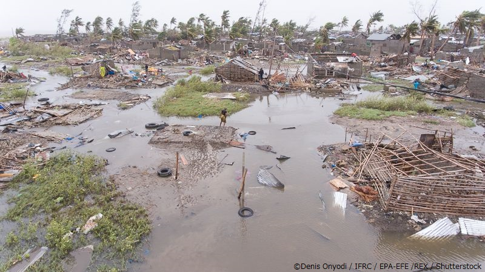

モザンビークは、南東アフリカに位置する魅力的な国です。その美しい ビーチ、豊かな自然、文化的な多様性が魅力となっています。
モザンビークには美しいビーチが広がっています。 ウォータースポーツを体験することができます。 また、豊かな自然環境や世界遺産も楽しむことができます。
モザンビークでは自然災害の被害を受けるリスクが 特に高くなっています。 ２０１９年に発生したサイクロン「イダイ」では２０２０年３月時点でも 人道支援を必要としていました。
また、美しいビーチが点在しており、 リラックスした時間を過ごす観光客もいます。
、モザンビークはアフリカ東海岸に位置し、スワヒリ文化の影響を受けています。 スワヒリ料理や音楽が楽しまれ、 地域の人々の生活に根付いています。
ヒワヒリ文化はアフリカとアラブの文化が融合した文化
モザンビークの首都マプトから北東へ約700kmのところにある、 海岸沿いの町ビランクロス。 バザルート群島はビランクロスの沖合に位置しており、6つの島で構成されています。
この辺り一帯は無数の珍しい海洋生態系が存在しています。 豊かな珊瑚礁やジュゴンを観察することができます。
教育の質が低く、教師に対する研修の機会も少なく、学校衛生施設が整備されていません。 また、女子の教育に対する親の理解が不足しています。 そういった状況を打破するために、行政は教師の能力強化、学習環境の整備、学校の水と衛生施設の修繕、 保護者や地域リーダーに対する意識啓発などに力を注いでいます。